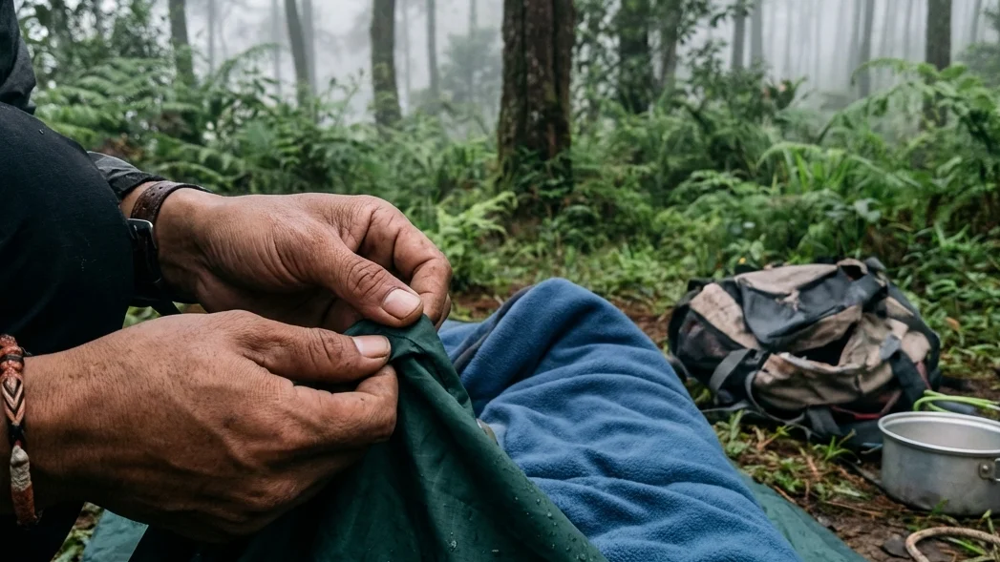

1. Seni Packing Ransel: Antara Ego dan Keselamatan (Survival)
Melarikan diri ke alam pegunungan seringkali dikonseptualisasikan sebagai sebuah kegiatan yang penuh dengan kebebasan tanpa beban. Namun, realita di lapangan bercerita lain. Alam liar—seindah apa pun wujudnya—tidak pernah menyediakan layanan kamar (*room service*) ataupun pemanas ruangan instan ketika suhu mendadak anjlok menjadi belasan derajat Celcius. Pada saat Anda melangkahkan kaki keluar dari batas kota, Anda secara otomatis tengah memindahkan seluruh tanggung jawab sistem pendukung kehidupan (life support system) Anda ke dalam sebuah tas ransel besar.
Banyak wisatawan pemula yang seringkali terjebak pada euforia ingin tampil *fashionable* untuk media sosial, sehingga mereka menjejalkan barang-barang tidak penting (overpacking) dan melupakan peralatan penunjang nyawa. Membedah Checklist Utama Peralatan Buat Ngecamp: Barang Wajib yang Harus Ada di Ransel Anda bukanlah sekadar panduan biasa, melainkan protokol keselamatan mutlak. Melalui ulasan komprehensif ini, kita akan mengklasifikasikan barang esensial ke dalam lima sistem utama (Shelter, Pakaian, Tidur, Dapur, dan Darurat). Anda akan memahami mengapa membawa celana bahan jeans adalah dosa besar di gunung, dan mengapa senter kepala jauh lebih berharga daripada lampu gantung estetik.
2. Sistem Tempat Tinggal (Shelter System) yang Kokoh
Kecuali Anda memilih untuk menyewa paket yang sudah didirikan (Comfort Camping), Anda wajib membawa sendiri bangunan pelindung Anda.
Tenda Dome Double Layer (Anti Badai & Anti Kondensasi)
Tenda adalah benteng pertahanan terakhir. Anda WAJIB membawa tenda dome berspesifikasi Double Layer. Jangan pernah menantang hawa dingin pegunungan (seperti di Batu Malang) dengan tenda single layer murah. Pada tenda satu lapis, uap dari napas tubuh Anda akan terperangkap, membentur atap yang dingin, dan menetes kembali menjadi embun air (kondensasi). Pada tenda double layer, embun tersebut akan tertangkap oleh lapisan payung luar (flysheet), sementara bagian dalam (inner) yang berupa jaring akan menjaga Anda tetap kering dan memastikan Anda tidak kehabisan oksigen.
Pasak Cadangan dan Tali Pancang (Guy Lines)
Struktur kerangka fiberglass belumlah cukup. Tenda baru bisa dikatakan berdiri kokoh jika Anda telah memaku seluruh pasak dan menarik dengan kencang tali guy lines yang ada di sisi luar tenda. Tali ini berfungsi menarik flysheet agar tidak menempel (bersentuhan) dengan kain inner bagian dalam (persentuhan kain ini akan menyebabkan air rembes dan bocor parah). Tali pancang juga mendistribusikan tekanan badai angin agar kerangka tenda Anda tidak bengkok atau patah.
BACA JUGA (Edukasi Tenda):
3. Sistem Pakaian (Layering System) Penghalau Hipotermia
Suhu di kawasan pegunungan bisa sangat menipu. Panas terik di siang hari dapat berubah menjadi hawa beku yang membunuh di malam hari.
Aturan Mutlak: Tinggalkan Bahan Celana Jeans Anda
Hukum keselamatan pertama dalam packing baju: DILARANG MEMBAWA CELANA ATAU JAKET JEANS (DENIM)! Bahan ini sama sekali tidak memiliki daya insulasi penahan panas dan sangat mudah ditembus angin. Celakanya, jika jeans Anda basah terkena embun pagi, ia akan sangat sulit kering, berubah menjadi teramat kaku, membebani lutut Anda, dan langsung menyalurkan suhu beku (es) tersebut ke persendian Anda. Ini adalah pintu gerbang tercepat menuju hipotermia.
Jaket Fleece (Insulasi) dan Windbreaker (Penahan Angin)
Kuasailah teknik 3-Layering System. Lapis pertama (base layer), gunakan kaus sintetik dry-fit penolak keringat. Lapis kedua (mid layer), kenakanlah sweater rajut tebal atau jaket berbahan polar (fleece) yang berfungsi seperti oven untuk menyimpan radiasi panas tubuh. Terakhir (outer layer), bungkuslah pertahanan Anda dengan jaket parasut tebal Windbreaker atau Hardshell (tahan air) untuk mencegah hantaman angin lembah merampas hawa panas yang telah Anda simpan di dalam fleece. Lindungi pula ujung-ujung tubuh Anda dengan kupluk rajut (beanie), sepasang sarung tangan, dan minimal tiga pasang kaus kaki.
4. Sistem Tidur Pribadi (Personal Sleep System)
Tanah gunung memiliki hukum termodinamikanya sendiri; ia akan senantiasa menyedot (berkonduksi) panas dari tubuh yang merebah di atasnya.
Matras Foil Isolator dan Matras Spons
Fungsi utama matras bukanlah sekadar agar empuk, melainkan sebagai isolator suhu pemutus dinginnya tanah. Gelarlah matras aluminium foil (dengan sisi mengkilat menghadap ke arah atas tubuh Anda) sebagai lapisan paling dasar untuk memantulkan radiasi panas. Di atas foil tersebut, tumpuklah dengan matras busa (spons) klasik atau matras angin untuk kenyamanan tulang punggung Anda.
Kantong Tidur (Sleeping bag) Tipe Mummy
Tinggalkan selimut rumah Anda karena angin bisa dengan mudah masuk lewat celahnya. Anda wajib masuk ke dalam Sleeping Bag (SB). Pilihlah SB bertipe mummy (desain menyempit dari bahu hingga ke kaki). Bentuk ketat ini krusial agar tidak ada ruang hampa berlebih (dead space) di dalam kantong; semakin sedikit ruang udara kosong, semakin cepat tubuh Anda memanaskannya. Pastikan bahan bagian dalamnya (inner) dilapisi dengan bulu polar sintetik atau dacron yang tebal.

Memastikan ketersediaan obat-obatan esensial (P3K) dan alat penerangan personal (headlamp) di bagian saku teratas ransel Anda adalah tindakan antisipasi wajib dalam menghadapi kondisi darurat medis. (Ilustrasi: Unsplash)5. Peralatan Dapur Lapangan (Camp Cooking Gear)
Suhu beku memaksa tubuh membakar kalori lebih cepat. Kehabisan asupan energi hangat di malam hari sangatlah berbahaya.
Kompor Portabel, Windshield, dan Panci Nesting
Bawalah seperangkat dapur lapangan ringkas: kompor gas lipat portabel lengkap dengan cadangan gas kaleng (hi-cook). Karena Anda memasak di alam bebas, alat Windshield (lempengan pelindung angin dari aluminium) adalah barang wajib agar api kompor Anda tidak padam sia-sia ditiup angin. Gunakan nesting (panci bersusun bahan *hard-anodized aluminum* yang super ringan) sebagai wadah multifungsi untuk merebus atau menumis masakan.
Air Bersih dan Makanan Padat Kalori
Siapkan persediaan air mineral yang amat melimpah. Untuk makanan, bawalah logistik yang padat kalori namun cepat diseduh: kornet sapi *sachet*, telur, sosis, oat, dan mi instan. Menyeduh segelas air jahe merah, kopi hitam, atau teh manis panas di sepertiga malam adalah "pertolongan pertama" yang terbukti sangat ampuh secara medis untuk memulihkan suhu inti tubuh (core temperature) yang anjlok.
6. Alat Penerangan, Navigasi, dan Kotak Keselamatan
Di alam liar, lampu jalan raya dan apotek 24 jam adalah hal yang tidak eksis. Kesiapsiagaan Anda adalah dokter sekaligus penunjuk jalan Anda.
Senter Kepala (Headlamp) dan Baterai Cadangan
Senter genggam biasa terbukti sangat merepotkan karena akan mengunci fungsi sebelah tangan Anda. Di gunung, Anda membutuhkan lampu Headlamp (senter yang diikatkan di kepala). Alat ini membebaskan kedua tangan Anda (hands-free) sehingga Anda bisa lebih sigap saat mendirikan tenda, memasak, atau berjalan ke toilet umum. Selalu siapkan baterai cadangan murni di dalam dompet anti air.
Kotak P3K Pribadi (First Aid Kit) dan Peluit
Kalungkanlah sebuah peluit survival pada leher atau tas Anda; tiupan peluit memakan energi lebih irit ketimbang berteriak bila Anda tersesat, dan gema suaranya membelah hutan berkali-kali lipat lebih kuat. Selain itu, Anda wajib membawa First Aid Kit (P3K) pribadi yang memuat paracetamol, obat anti diare, betadine, plester elastis, minyak kayu putih pemanas dada, serta obat rutin bagi Anda yang mengidap riwayat alergi atau asma.
BACA JUGA (Opsi Kemah Praktis):
7. Opsi Praktis: Menyewa Alat Kemah di Batu Sunrise Camp
Setelah membaca daftar krusial di atas, Anda mungkin mulai meragukan tebal dompet Anda karena harus berinvestasi jutaan rupiah untuk membeli tenda *dome* anti-badai dan *sleeping bag* yang berkualitas. Jika Anda berada di fase ini, inovasi pariwisata berkonsep Comfort Camping adalah pahlawan Anda.
Operator perkemahan profesional yang bermarkas di Malang Raya (seperti Batu Sunrise Camp) memahami sepenuhnya kendala logistik wisatawan modern. Mereka menyajikan opsi sewa tenda paket All-In. Cukup membayar ratusan ribu saja per rombongan (sangat hemat bila patungan), sebuah tenda berjenis *double layer* yang sangat tangguh telah didirikan tegak di lahan asri sebelum Anda tiba. Fasilitas pelindung *Sleep System* di dalamnya juga amat prima; matras spons tebal dan *sleeping bag* rajut yang super wangi sudah tertata manis menyambut tubuh Anda yang letih. Ditunjang ketersediaan sarana colokan listrik dan bilik toilet yang amat higienis, Anda tidak perlu lagi bersusah payah memikul ransel yang seberat gajah ke punggung Anda.
8. Kesimpulan
Berpetualang ke alam bebas bukanlah sekadar melarikan diri dari kota, melainkan juga menuntut sikap proaktif dalam menjaga keselamatan nyawa sendiri. Melalui bedah mendalam mengenai Checklist Utama Peralatan Buat Ngecamp: Barang Wajib yang Harus Ada di Ransel Anda ini, kita telah menarik sebuah benang merah bahwa utilitas (fungsi) barang harus selalu berdiri kokoh mengungguli hasrat untuk tampil estetis (fashionable). Kepatuhan untuk mematuhi formula 3-Layering System pada pakaian, memprioritaskan insulasi bumi melalui matras ganda dan sleeping bag jenis mummy, serta kecakapan menyediakan first aid kit adalah hukum rimba yang tidak boleh Anda langgar sedikitpun. Apabila mengorganisir dan membeli infrastruktur alat yang berlimpah ini dirasa menguras stamina dan modal finansial Anda, memotong kompas dengan cara menyewa fasilitas All-In Comfort Camping di wilayah terkelola semacam Batu Sunrise Camp adalah langkah *hack* yang paling bijaksana. Evaluasi kembali seluruh isi ransel gunung Anda malam ini, tinggalkan celana denim itu di rumah, dan reguklah kedamaian hawa pegunungan dengan perasaan aman tiada tara.